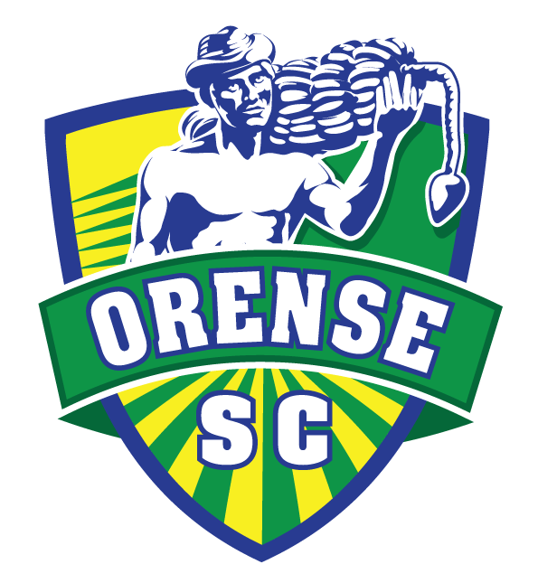
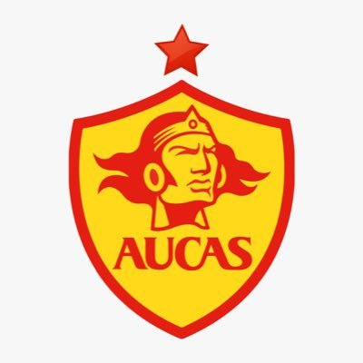
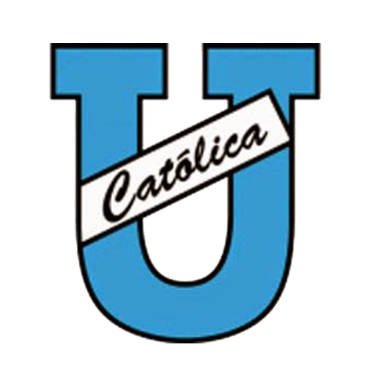
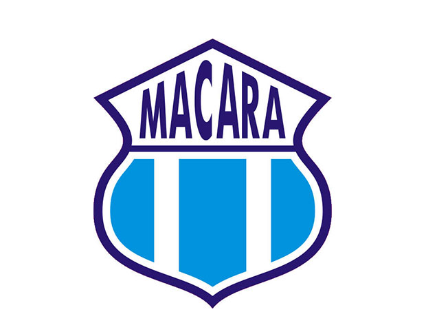
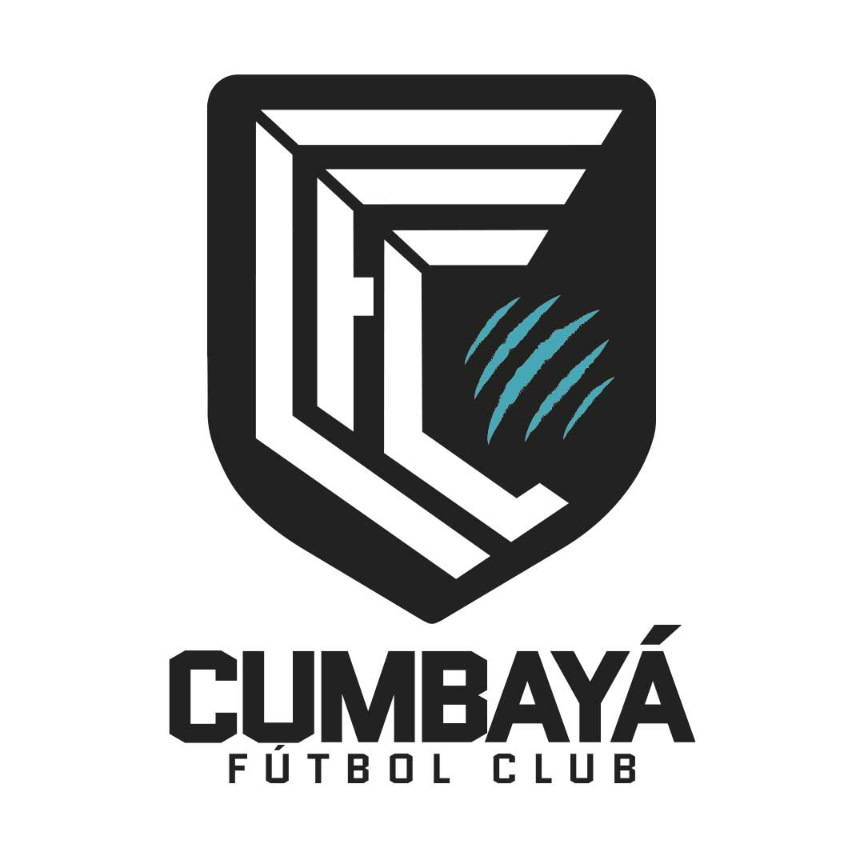
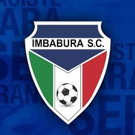
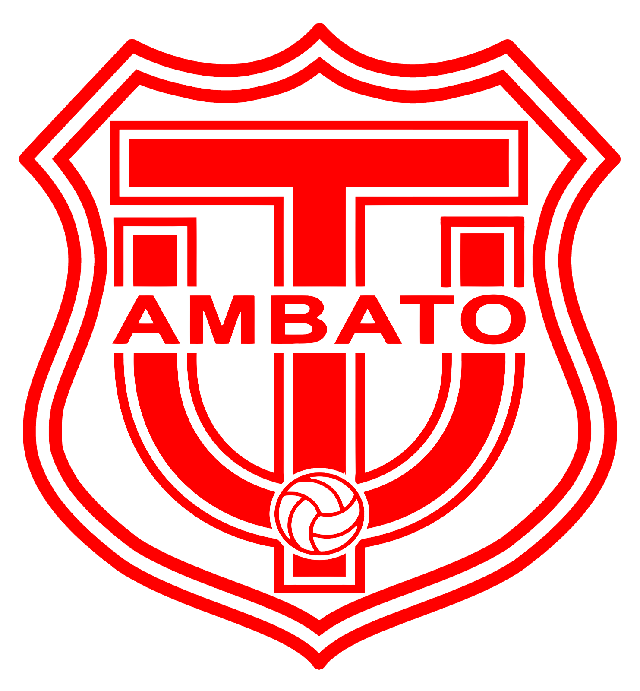

| Partido |
Fecha |
Estadio |
|
 Orense SC vs Libertad FC
|
18 de Octubre 2024 | 19:00 hs. (VIERNES) |
Estadio 9 de Mayo |
 D. Cuenca vs Independiente del
Valle D. Cuenca vs Independiente del
Valle

|
25 de Octubre 2024 | 19:00 hs. (VIERNES) |
Estadio Alejandro Serrano Aguilar |
|
Libertad FC vs Aucas

|
26 de Octubre 2024 | 14:00 hs. (SÁBADO) |
Estadio Libertad |
 Liga de Quito vs Mushuc Runa Liga de Quito vs Mushuc Runa

|
26 de Octubre 2024 | 16:30 hs. (SÁBADO) |
Estadio Rodrigo Paz Delgado |
|
 U. Católica de Quito vs Emelec
|
26 de Octubre 2024 | 19:00 hs. (SÁBADO) |
Estadio Olímpico Atahualpa |
|
 Macará vs Cumbayá FC

|
27 de Octubre 2024 | 13:00 hs. (DOMINGO) |
Estadio Bellavista de Ambato |
 El Nacional vs Orense SC El Nacional vs Orense SC

|
27 de Octubre 2024 | 15:30 hs. (DOMINGO) |
Estadio Atahualpa |
 Barcelona vs Delfín Barcelona vs Delfín
|
27 de Octubre 2024 | 18:00 hs. (DOMINGO) |
Estadio Monumental Banco Pichincha |
|
 Imbabura SC vs Técnico Universitario

|
28 de Octubre 2024 | 19:00 hs. (LUNES) |
Estadio Olímpico de Ibarra |
|
Orense SC vs Delfín
|
1 de Noviembre 2024 | 19:00 hs. (VIERNES) |
Estadio 9 de Mayo |
|
Cumbayá FC vs Deportivo Cuenca
|
2 de Noviembre 2024 | 14:00 hs. (SÁBADO) |
Estadio La Inmaculada |
|
Libertad FC vs Imbabura SC
|
2 de Noviembre 2024 | 16:30 hs. (SÁBADO) |
Estadio Libertad |
|
Aucas vs Barcelona
|
2 de Noviembre 2024 | 19:00 hs. (SÁBADO) |
Estadio Gonzalo Pozo Ripalda |
|
Mushuc Runa vs Macará
|
3 de Noviembre 2024 | 12:30 hs. (DOMINGO) |
Estadio Municipal La Cocha |
|
Independiente del Valle
vs El Nacional
|
3 de Noviembre 2024 | 15:00 hs. (DOMINGO) |
Estadio Banco Guayaquil |
 Emelec vs Liga de Quito Emelec vs Liga de Quito
|
3 de Noviembre 2024 | 18:00 hs. (DOMINGO) |
Estadio George Capwell |
|
Técnico Universitario vs
U. Católica de Quito
|
4 de Noviembre 2024 | 19:00 hs. (LUNES) |
Estadio Bellavista de Ambato |
|
Delfín vs Mushuc Runa
|
8 de Noviembre 2024 | 19:00 hs. (VIERNES) |
Estadio Jocay |
|
U. Católica de Quito vs Aucas
|
9 de Noviembre 2024 | 13:30 hs. (SÁBADO) |
Estadio Olímpico Atahualpa |
|
Macará vs Emelec
|
9 de Noviembre 2024 | 16:00 hs. (SÁBADO) |
Estadio Bellavista de Ambato |
|
Liga de Quito vs Independiente del Valle
|
9 de Noviembre 2024 | 19:00 hs. (SÁBADO) |
Estadio Rodrigo Paz Delgado |
| Partido |
Resultado |
Estadio |
| Universidad Católica vs Delfin |
1 - 0 |
Estadio Olímpico Atahualpa |
| Emelec vs Técnico Universitario |
3 - 1 |
Estadio George Capwell Banco del Austro |
| Mushuc Runa vs Orense |
0 - 2 |
Estadio Municipal La Cocha |
| Macará vs Imbabura |
0 - 2 |
Estadio Bellavista de Ambato |
| Deportivo Cuenca vs Barcelona |
0 - 1 |
Estadio Alejandro Serrano Aguilar Banco del Austro |
| LDU Quito vs El Nacional |
1 - 1 |
Estadio Rodrigo Paz Delgado |
| Cumbayá vs Aucas |
0 - 3 |
Estadio Olímpico Atahualpa |
| Libertad vs Independiente Valle |
1 - 1 |
Estadio Federativo Reina del Cisne |